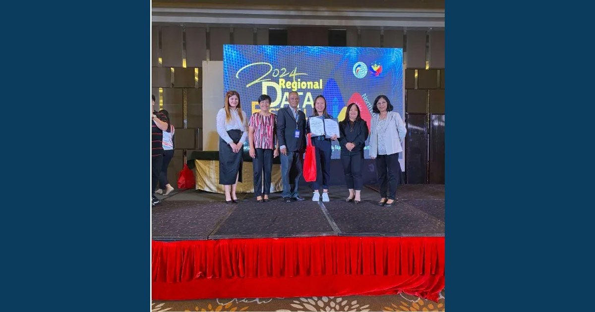

Region 2 Emerges as Overall Champion

Representing Cagayan Valley, delegates from USLT, MCNP, SFC, QSU Cabarroguis, and SMU secured the Overall Champion title at the 2024 Regional Data Festival for the North Luzon Cluster held at Subic Bay Travelers Hotel and Event Center in Subic, Zambales.
Read full article